Mensageria
Mensageria é uma função onde pode-se incluir, alterar, excluir notificações cadastrados no sistema e atualizar a lista de notificações.
Esta seção pode ser acessada pelo menu lateral em Tarefas ou menu de utilidades > Ferramentas > Mensageria (notificações).
A mensageria refere-se à capacidade de trocar mensagens entre diferentes sistemas, aplicativos ou componentes de software para facilitar a comunicação e a troca de informações.
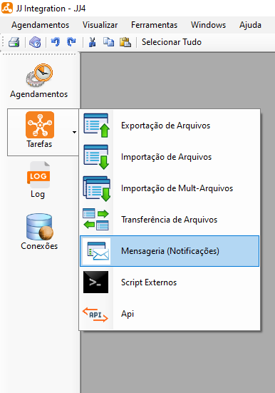
- Ao selecionar o sistema, irá exibir uma tela onde será possível incluir, alterar, excluir, atualizar notificações e exibir dependências.
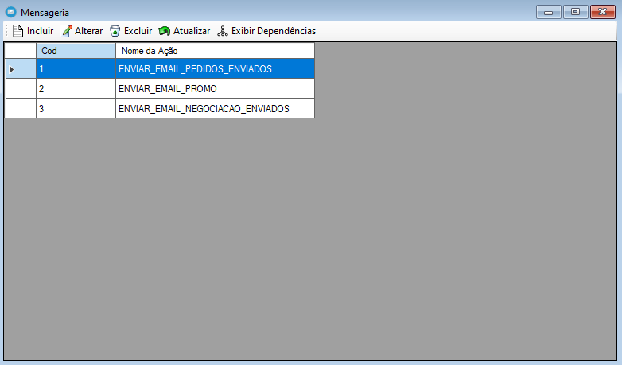
Para incluir uma nova notificação, selecione o botão Incluir
 . Ao selecionar o sistema, irá exibir uma tela para cadastro de notificação que terá quatro partes sendo elas: configuração, Banco de dados, Mapeamento e Eventos.
. Ao selecionar o sistema, irá exibir uma tela para cadastro de notificação que terá quatro partes sendo elas: configuração, Banco de dados, Mapeamento e Eventos.Para alterar uma notificação, selecione o botão Alterar
 . Ao selecionar o sistema, irá exibir uma tela para edição de notificação que terá quatro partes sendo elas: configuração, Banco de dados, Mapeamento e Eventos. Também é possível Duplicar mensageria já criada, visando simplificar o processo e produtividade.
. Ao selecionar o sistema, irá exibir uma tela para edição de notificação que terá quatro partes sendo elas: configuração, Banco de dados, Mapeamento e Eventos. Também é possível Duplicar mensageria já criada, visando simplificar o processo e produtividade.Na aba Configuração preencha os detalhes da mensageria, como nome, tipo de notificação, conexão SMTP para envio de e-mail e formato do e-mail.
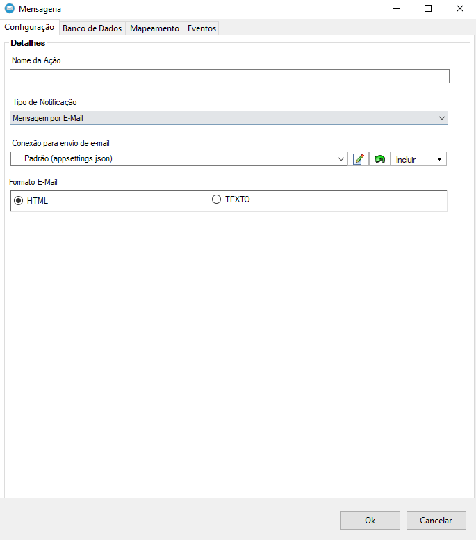
- Na aba "Banco de Dados" preencha a origem da conexão, como conexão com banco de dados, objeto e nome da view.
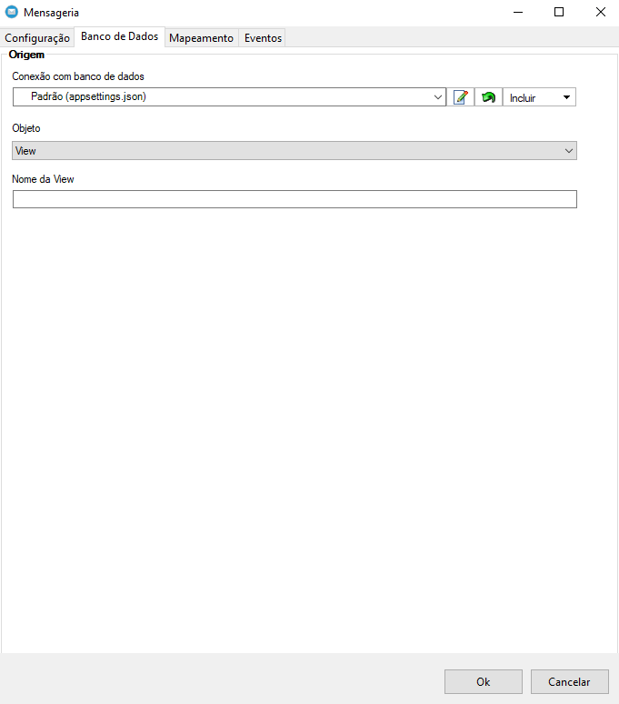
- Na aba "Mapeamento" preencha o mapeamento de campos, como e-mail para, e-mail com cópia, e-mail com cópia oculta, assunto, conteúdo e anexo (caminho completo do arquivo).
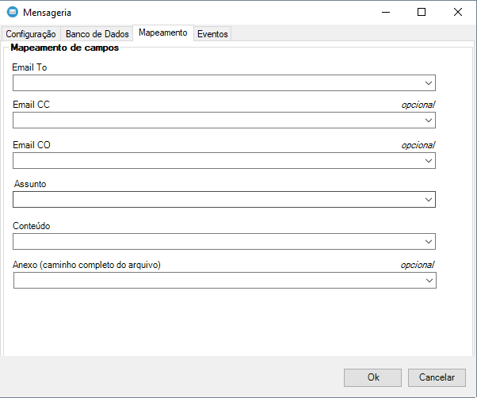
- Na aba "Eventos" altere o evento que deseja executar e preencha o campo Script com o script de banco de dados necessário para execução.

- Para excluir uma notificação selecione o arquivo desejado e após selecione o botão Excluir ,
após selecionar o sistema irá exibir uma mensagem de confirmação, selecione botão "Ok" para confirmar e excluir.
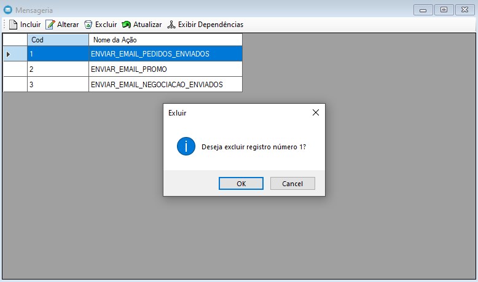
Para atualizar a lista de mensageria selecione o botão Atualizar
 , após selecionar o sistema irá atualizar a lista sendo possível dar continuidade nas atividades normalmente.
, após selecionar o sistema irá atualizar a lista sendo possível dar continuidade nas atividades normalmente.Para exibir dependencias da tarefa selecionada, selecione o botão Exibir Dependências
 , após selecionar o sistema irá exibir a lista de dependências da tarefa caso exista alguma.
, após selecionar o sistema irá exibir a lista de dependências da tarefa caso exista alguma.

O JJ Integration oferece três tipos distintos de recursos de mensageria, cada um com suas próprias funcionalidades e características específicas. Esses recursos são E-mail, Push e WhatsApp. A seguir, apresentaremos uma descrição mais detalhada sobre cada um deles.
Mensageria por E-mail
A mensageria por email refere-se ao uso de emails como meio de comunicação e troca de mensagens entre sistemas ou usuários.
A mensageria por email pode ser utilizada para enviar notificações, alertas, relatórios ou qualquer tipo de mensagem automatizada para destinatários específicos.
Para usar a mensageria por e-mail, é necessário definir as configurações do servidor SMTP (Simple Mail Transfer Protocol), como o endereço do servidor, porta, autenticação, credenciais e outros parâmetros necessários para estabelecer a conexão com o servidor de email.
Na Configuração você pode colocar uma conexão e personalizar o conteúdo do email, incluindo a formatação HTML ou TEXTO.

O Banco de Dados desempenha um papel importante no armazenamento e gerenciamento das informações relacionadas aos e-mails enviados e recebidos.
As mensagens de e-mail, incluindo seus cabeçalhos, corpos, anexos e metadados associados, são armazenadas no banco de dados. Cada mensagem geralmente é representada como um registro na tabela do banco de dados. O banco de dados é responsável por garantir a persistência e a integridade dessas mensagens, permitindo que sejam acessadas, pesquisadas e recuperadas quando necessário.
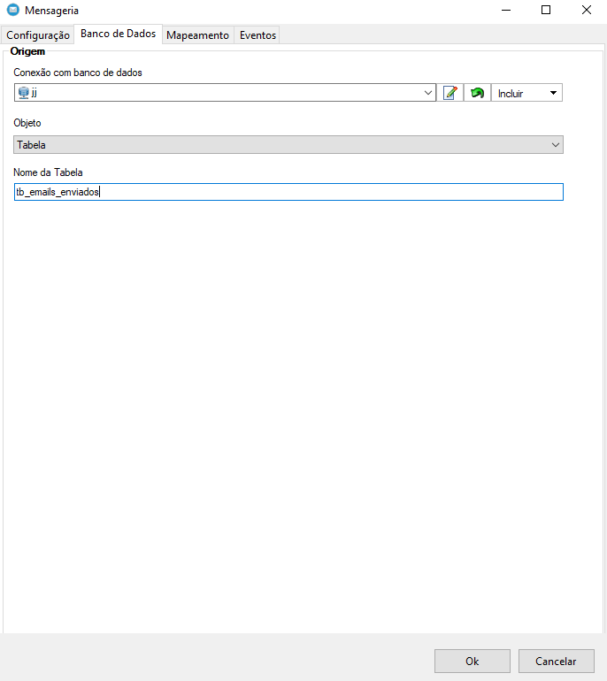
No Mapeamento é onde será fornecido as informações necessárias para compor a mensagem. Isso inclui o endereço de email do remetente, o(s) endereço(s) de email do(s) destinatário(s), o assunto do email e o conteúdo da mensagem como anexos e outros elementos relevantes.
- Eventos na mensageria de e-mail referem-se a ações ou ocorrências específicas relacionadas ao envio, recebimento ou processamento de e-mails. Esses eventos podem ser usados para monitorar, registrar e responder a atividades importantes no sistema de mensageria de e-mail.

Mensageria por Push
A Mensageria por Push é uma forma de comunicação utilizada em dispositivos móveis, como smartphones, que permite o envio de mensagens instantâneas diretamente para a tela inicial do aparelho, mesmo quando o aplicativo correspondente não está em uso. Essas mensagens, conhecidas como notificações push, são exibidas na forma de alertas visuais, sons ou vibrações, atraindo a atenção do usuário.
Com o Push, também é possivel mapear colunas de uma tabela no banco de dados com os campos necessários para enviar o push.
A seguir, detalharemos as funcionalidades e configurações dessa funcionalidade.
Configurar envio de mensagens por push
Primeiro, você precisa criar uma conta e um projeto no Firebase. Para isso:
- Acesse https://firebase.google.com
- Vá para o console e crie um projeto
- Em configurações do projeto procure por Clouding Message e copie a chave do servidor e o código do remetente.
Sua configuração ficará parecida com essa:
Firebase
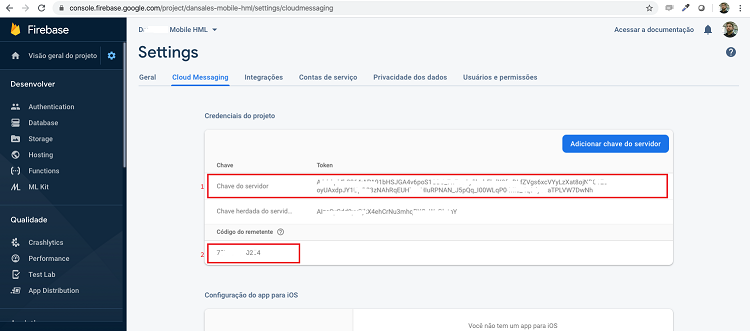
JJIntegration
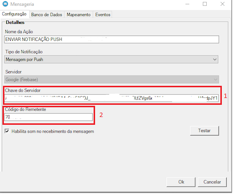
Enviar uma mensagem de Teste
Após realizar as configurações, clique em "testar" e em seguida aparecerá uma tela com esses campos:
- Chave do servidor: Chave informada na conta do Firebase (veja imagem acima)
- Código Remetente: Código informado na conta do Firebase.
- Token Registro FCM: Esse campo é muito importante, ele informa para o Firebase quem deverá receber a mensagem, você pode informar:
AppId do celular
Um identificador único do celular
Uma chave parecida com essa:
cfnO8lY8Img:APA91bFkiluVrYcWZbKKq5dLhzno2RSRJEmFPYXguU5F_GC3X-RdbVbe0I10ujKdEFJ5CtZe2PwaXtsgG7vZdg3zB7BzgIH8TW2mWIGzzXDGmEuAY8hnDKN--X9VRmtcsxUtNydDvju6Topics são chaves configuradas pelo programador no celular, por exemplo Gerente (cargos), SP (regiões) etc... Para enviar uma mensagem a todos os usuários que subscreveram a um tópico digite:
/topics/{nome do tópico}/topics/all(para enviar notificação para todos os usuários)
- Título: Título da mensagem push
- Mensagem: Descrição da mensagem push.
- Json: Esse é campo é opcional é utilizado pelo programador para realizar alguma ação específica a partir desse push, ao informar esse conteúdo o mesmo será enviado no campo “data” do json. Exemplo:
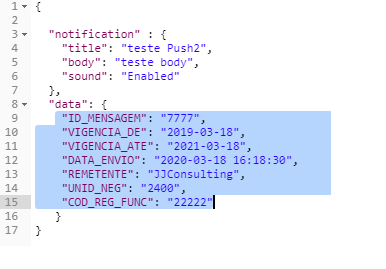
- Habilitar Som: Quando o usuário receber a mensagem push tocar um som.
Essa forma de comunicação é extremamente conveniente, pois permite que as pessoas recebam informações importantes em tempo real, sem precisar abrir os aplicativos individualmente. As notificações push facilitam a comunicação instantânea, mantendo os usuários atualizados e engajados com as informações mais relevantes de seus aplicativos e serviços preferidos, diretamente na tela de seu dispositivo móvel.
Mensageria Por WhatsApp
- Na mensageria por WhatsApp, é necessário se cadastrar na Twilio para obter mensagens via WhatsApp
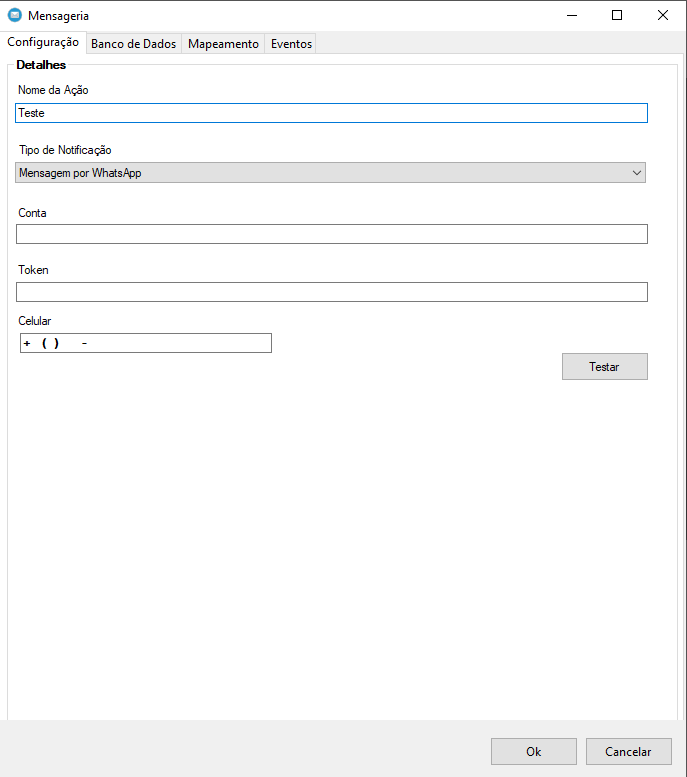
Aqui está uma visão geral de como você pode usar a Twilio para obter mensagens via WhatsApp no JJ Integration:
Cadastre-se na Twilio: Acesse o site da Twilio (https://www.twilio.com/) e faça o cadastro em sua plataforma. Você precisará fornecer algumas informações básicas e criar uma conta.
Configure a integração do WhatsApp: Após criar a conta na Twilio, você precisará configurar a integração do WhatsApp. Isso envolve a autenticação e a vinculação do número de telefone do WhatsApp que você deseja utilizar.
Obtenha as credenciais da API do WhatsApp: A Twilio fornecerá credenciais, como SID da conta e token de autenticação, que você precisará usar para autenticar as chamadas de API que fará para enviar e receber mensagens do WhatsApp.
Integre a API do WhatsApp: Agora, você pode integrar a API do WhatsApp fornecida pela Twilio no JJ Integration. Você precisará fazer chamadas de API usando as credenciais fornecidas para enviar mensagens, receber mensagens de entrada, gerenciar contatos etc.
Trate as mensagens recebidas: Quando uma mensagem é recebida no número de WhatsApp vinculado à sua conta da Twilio, você receberá uma notificação por meio da API. O JJ Integration precisa estar configurado para receber e processar essas notificações, tratando as mensagens recebidas conforme necessário.
Gerencie os contatos e números de telefone: Através da API da Twilio, você pode gerenciar contatos, adicionar novos números de telefone do WhatsApp, configurar respostas automáticas, criar fluxos de conversa e outras funcionalidades relacionadas.
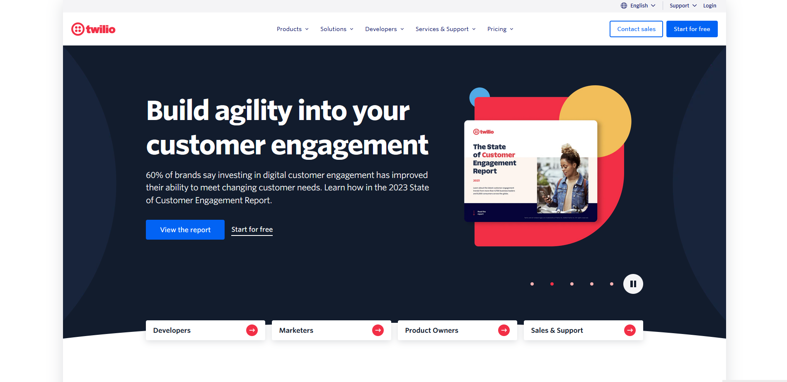
Também é possível fazer um mapeamento e utilizar uma conexão de Banco de Dados. Isso permite armazenar e gerenciar dados relacionados às mensagens, contatos ou qualquer outra informação relevante para a integração.
Com a conexão e os mapeamentos configurados, você poderá executar operações de banco de dados, como inserção, consulta, atualização ou exclusão de registros. Por exemplo, quando uma nova mensagem do WhatsApp é recebida, você pode armazenar essa mensagem no banco de dados ou atualizar informações existentes.
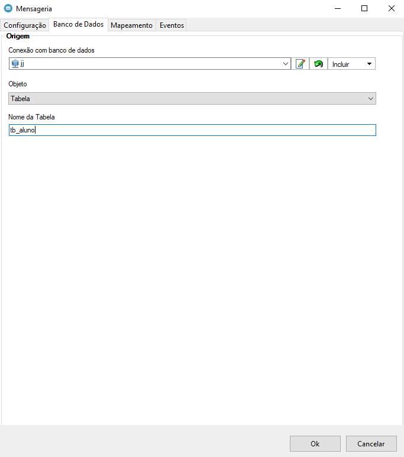
O Mapeamento de Campos que contêm celular e mensagem refere-se à associação ou vinculação dos campos relevantes nos dados recebidos por meio de uma integração com mensageria por WhatsApp aos campos correspondentes em uma estrutura de dados ou modelo dentro do JJ Integration.
Quando você recebe mensagens via WhatsApp, os dados associados a elas geralmente incluem informações como número de telefone celular do remetente e o conteúdo da mensagem em si. O mapeamento de campos é o processo de identificar essas informações nos dados recebidos e atribuí-las aos campos apropriados em sua estrutura de dados.
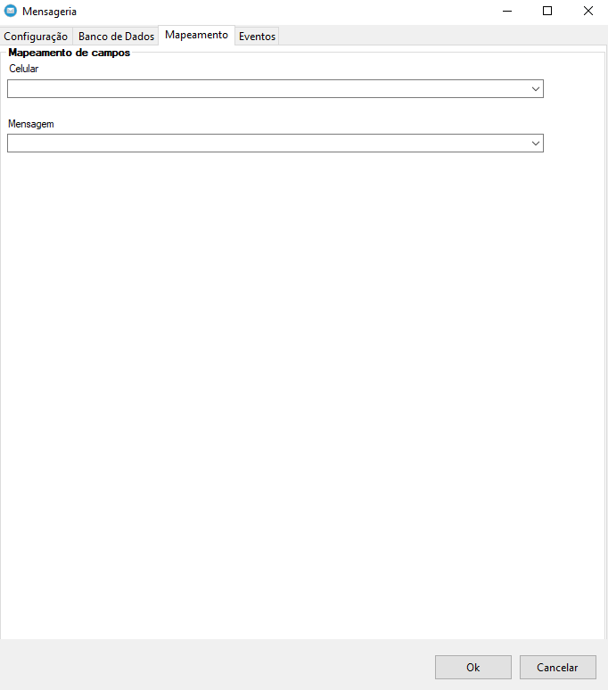
- Também é possível configurar Eventos que podem ser acionados por uma variedade de gatilhos, como uma interação do usuário, uma mudança de estado de um sistema externo ou uma entrada de dados recebida.
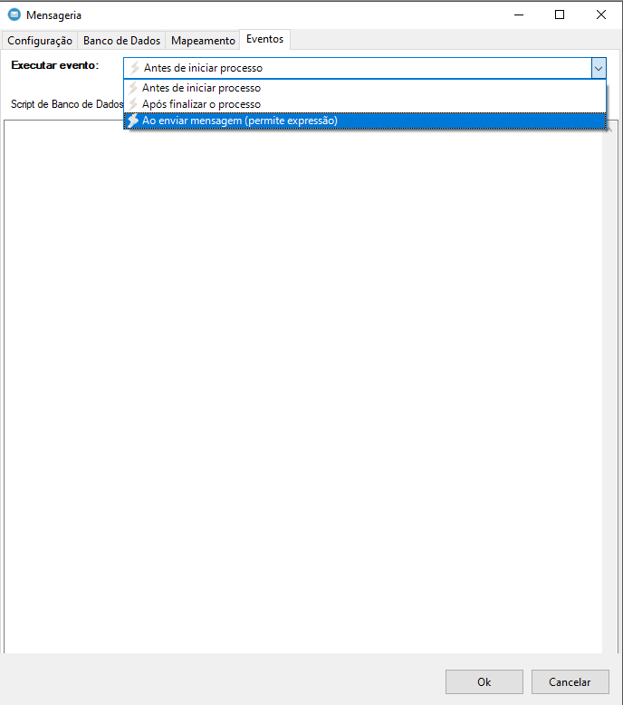